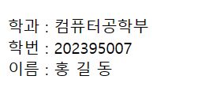
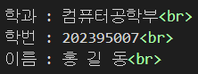

웹 문서에서 자료를 정리할 때 자주 사용하는 요소가 '표
(table)' 입니다. 표는 행(row)과 열(column)로 이루어져
있고 행과 열이 만나 이루는 영역을 셀(cel)이라고 부를니
다. 표를 만들려면 행과 열 두 가지를 고려해야 하므로 하
나의 표를 만들기 위해서는 여러 개의 태그가 사용됩니다
표를 만들 때 사용하는 태그들에 대해 알아보겠습니다.
<fbody>태그는 표의 본문 부분을 정의하는 태그
- 표의 위, 아래 부분을 제외한 중간 부분의 행을 <fbody>태그로 본문 부분을 정의할 수 있음
<tfoot>
<tfoot>태그는 표의 요약 부분을 정의하는 태그
- 표의 맨 아래의 행을 &<tfoot>태그로 요약 부분을 정의할 수 있음

<col>
<col>태그는 2개 이상의 열을 묶는 태그
- span 속성을 활용하여 몇 개의 셀을 믂을건지 정의 가능
- style 속성을 사용하여 한꺼번에 스타일 적용 가능
- 단일 태그(닫는 태그가 없음)

<colgroup>
<colgroup>태그는 여러 개의 col을 묶는 태그
- <colgroup>태그를 사용하여 묶는 열의 개수만큼 <col>태그 추가 가능
- <col>태그와 <colgroup>태그를 사용 시 주의할 점은 <caption>태그의 뒤나
<tr> / <td>태그 전에 사용해야 함